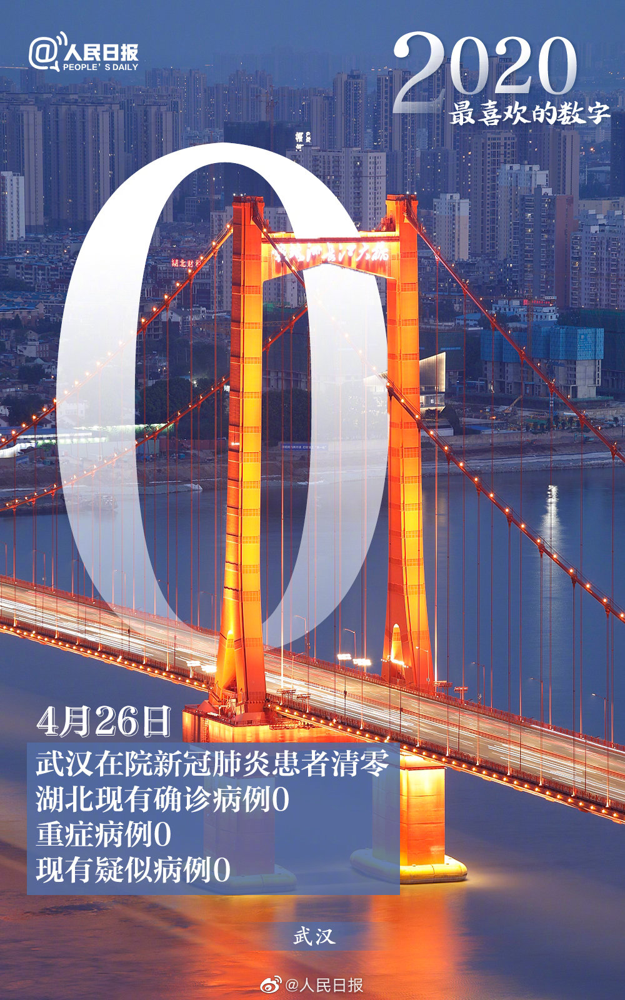

这是一个来之不易的“零”。面对来势汹汹的疫情，习近平总书记亲自部署、亲自指挥这场疫情防控的人民战争、总体战、阻击战，举国动员，各部门、各地鼎力相助，四万多名医务工作者火速驰援。这个“零”，历经了艰苦卓绝的斗争，彰显了众志成城的力量。
在这场战役中，340多支医疗队、四万多医护战士来自全国各地，这里是一份详尽数据。
点击图片查看各省医护人员援助湖北数据

| 省份/其他 | 人数/人 | 省份/其他 | 人数/人 |
|---|---|---|---|
| 新疆生产建设兵团 | 107 | 青海 | 239 |
| 新疆 | 387 | 宁夏 | 785 |
| 甘肃 | 796 | 内蒙古 | 849 |
| 海南 | 865 | 广西 | 962 |
| 河北 | 1100 | 云南 | 1156 |
| 陕西 | 1202 | 吉林 | 1209 |
| 北京 | 1215 | 江西 | 1271 |
| 河南 | 1281 | 天津 | 1307 |
| 安徽 | 1362 | 福建 | 1393 |
| 贵州 | 1443 | 四川 | 1463 |
| 湖南 | 1489 | 山西 | 1516 |
| 黑龙江 | 1533 | 重庆 | 1636 |
| 上海 | 1649 | 山东 | 1775 |
| 浙江 | 2018 | 辽宁 | 2054 |
| 广东 | 2484 | 江苏 | 2802 |
| 人民军队 | 4000多 |
数据来源于网络
四万多医护战士跨越山河来到湖北，在这一场防疫抗疫中，他们的足迹留在每一个细节。
点击文字查看原文
武汉在院患者清零令人兴奋，这个结果离不开所有人的努力。这个时候，仍要保持高度的清醒和警惕，坚守每个人的努力成果。武汉“清零”不等于完胜，也不代表零风险。如何正确对待“清零”？新华网《武汉“清零”，风险意识不应清零》给出提示。